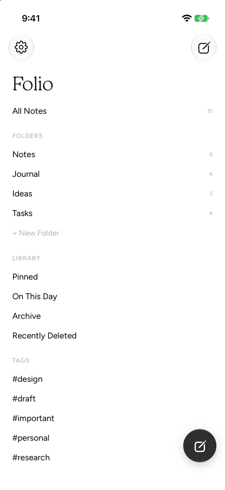

Productivity
Folio
A quiet place to write, everywhere.
iPhone · iPad · Mac · Watch

The app
A quiet place to write, everywhere.
Notes with real typographic care. Nine complete themes, each with its own palette, typeface and page decoration, plus rich text, images and Pencil sketches, synced through your own iCloud.
Face ID can lock a single note or the whole app. Everything is stored on device and mirrored to private CloudKit, on by default, because sync that rides on your own iCloud costs nothing and has no business being a paid tier.
Features
What it actually does.
Nine complete themes
Rich text, images and Pencil
Face ID on a note or the app
Private CloudKit sync
Privacy
No third-party servers and no trackers. Notes sync through your own iCloud.
StorageOn device
SwiftData on-device with private CloudKit sync
AnalyticsNone
No analytics of any kind.
Third partiesNone
No third-party SDKs, trackers or advertising.